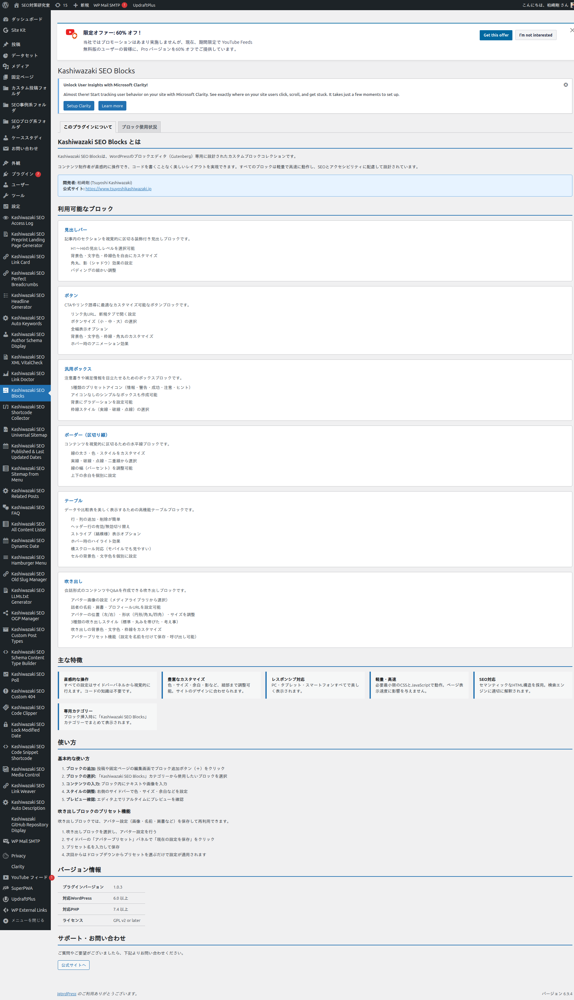
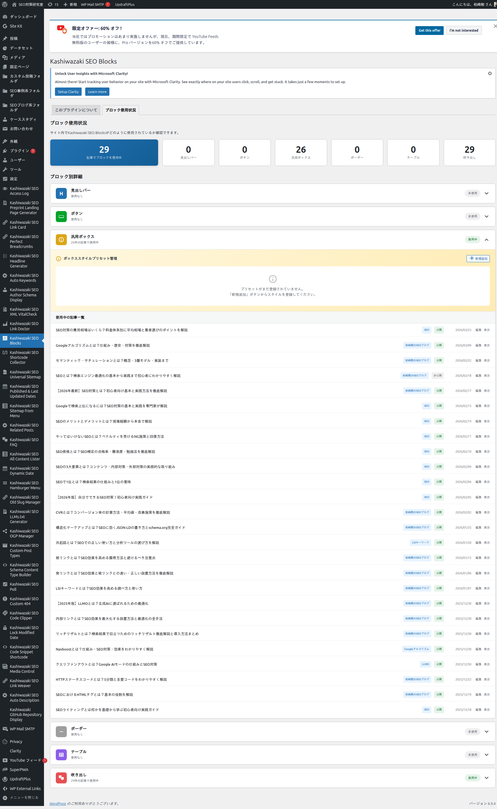

インストール・使い方
プラグインのインストールからブロックの基本的な使い方まで解説します。
インストール手順
1
プラグインファイルを
/wp-content/plugins/ にアップロード2
WordPress管理画面「プラグイン」から有効化
3
左メニューに「Kashiwazaki SEO Blocks」が追加される
ブロックエディタ（Gutenberg）専用プラグインです。クラシックエディタでは使用できません。
基本的な使い方
1
投稿・固定ページの編集画面でブロック追加ボタン（+）をクリック
2
「Kashiwazaki SEO Blocks」カテゴリからブロックを選択
3
コンテンツを入力し、右サイドバーのインスペクターパネルでスタイルをカスタマイズ
4
プレビューで確認し、公開
管理画面ダッシュボード

ダッシュボードには2つのタブがあります。
| タブ | 内容 |
|---|---|
| このプラグインについて | プラグイン情報・利用可能ブロック一覧・使い方ガイド・バージョン情報 |
| ブロック使用状況 | ブロックごとの使用回数・使用中の投稿一覧・プリセット管理・一括変換 |
ブロック使用状況

各ブロックの使用回数がサマリーカードで表示され、アコーディオンを開くと使用中の投稿一覧を確認できます。
プリセット機能
吹き出し・ボタン・ボックスの3種類のブロックでプリセット（スタイルの保存・再利用）が可能です。
1
吹き出し・ボタン・ボックスブロックでスタイルを設定
2
管理画面の「ブロック使用状況」タブでプリセットとして保存
3
保存したプリセットを別の投稿で再利用
4
一括変換機能で既存投稿のブロックスタイルを一括変更
一括変換は投稿コンテンツを直接変更する不可逆操作です。実行前にバックアップを推奨します。